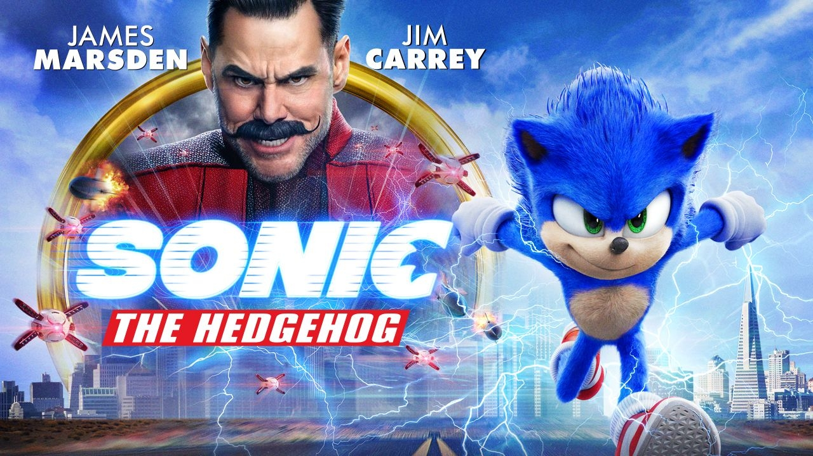
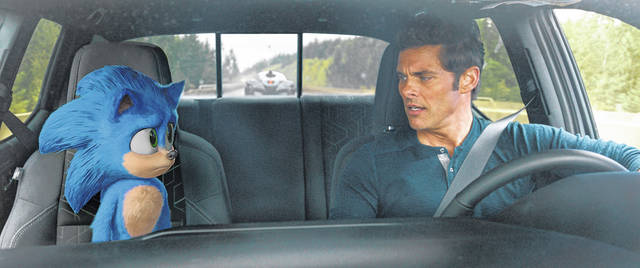
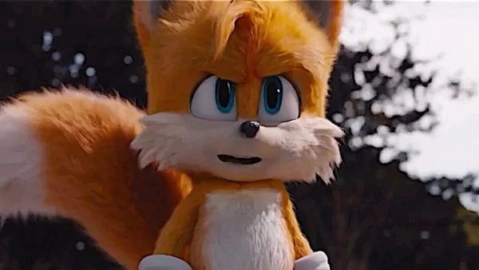
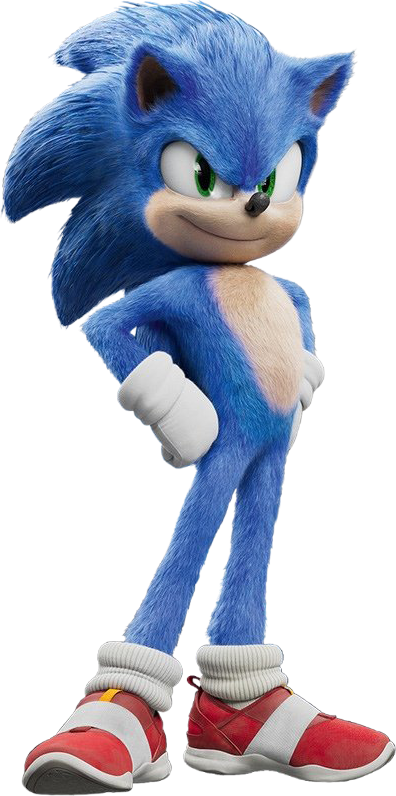
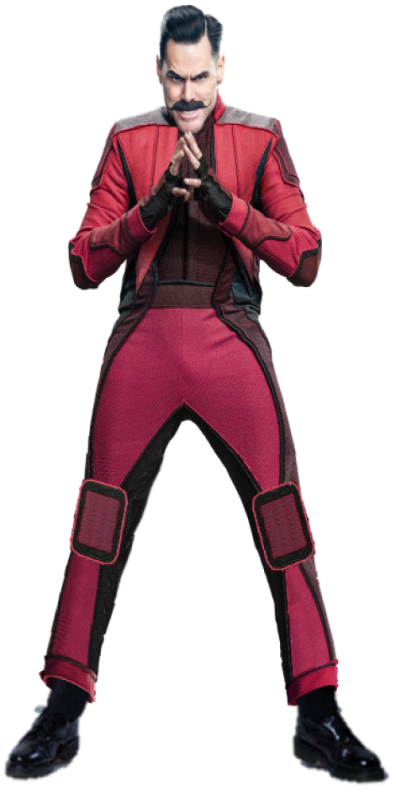

Sonic es un erizo humanoide y azul capaz de alcanzar grandes velocidades corriendo, saltar sobre sus enemigos y convertirse en una bola rodante y letal.

Es un científico, con un coeficiente intelectual de 300 y tiene un sueño de dominar el mundo en toda su historia constantes veces, Eggman intento crear su imperio pero son infinitamente frustrados por Sonic the Hedgehog , su archi-enemigo, y los amigos de Sonic.
Tom Wachowski, el alguacil de Green Hills, Montana. Justo cuando Sonic estaba abriendo un portal para escapar a otro mundo paralelo, es descubierto por Tom y éste le dispara un dardo tranquilizante de manera accidental, lo que causa que el debilitado erizo azul suelte accidentalmente su bolsa de anillos que sostenía, la cual termina cayendo a través de un portal abierto que conduce a San Francisco.